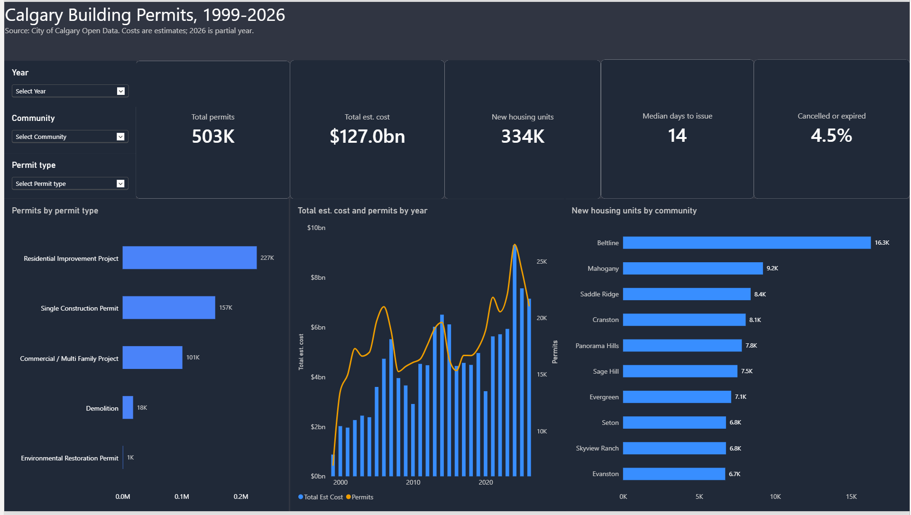

01.
Calgary Building Permits
City of Calgary open data, Power BI and Python
How have permit volume, cost and waiting time changed in Calgary from 1999 to 2026? I cleaned 503,495 permits with pandas and numpy and built a six-page interactive Power BI report.
- Record 26,521 permits in 2024.
- The median wait for a permit grew from 6 days (2015) to 23 days (2024).
- The 2007 "drop" in median cost was a change in permit mix, not in prices.
